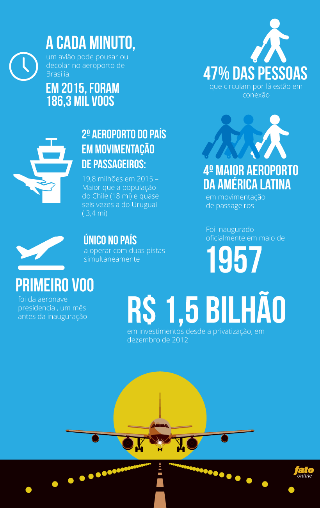
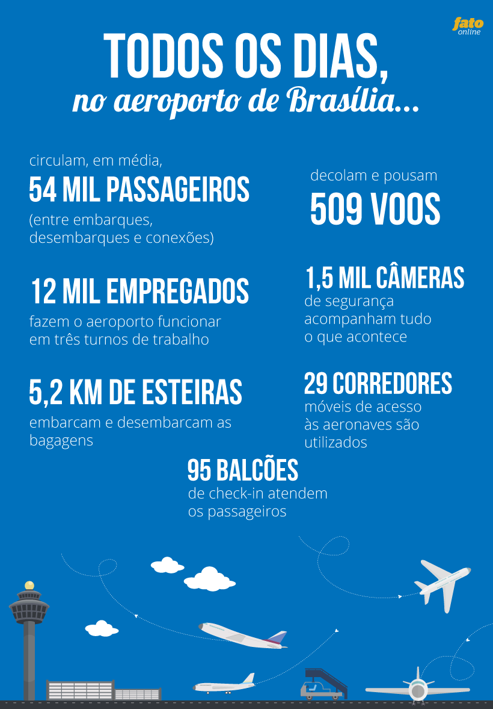

![]()
Somente em 2015, 19,8 milhões de passageiros circularam pelo JK, mais do que a população do Chile (18 milhões) e quase seis vezes a do Uruguai (3,4 milhões). O aeroporto de Brasília é o segundo do país nesse quesito, atrás apenas do de Guarulhos (SP). E o quarto da América Latina.
O aeroporto de Brasília cresceu tanto nos últimos anos, que os passageiros tiveram de recalcular o horário de chegada para o voo. A depender do portão de embarque, pode-se levar até 20 minutos para passar pelas máquinas de raio-X e percorrer todo o saguão.
A transformação do terminal Juscelino Kubitscheck fez, inclusive, a equipe de segurança ter de lidar com situações novas e inusitadas, como a de pessoas que se atrasam, perdem o voo e brigam com funcionários da companhia aérea porque “o aeroporto está grande demais”.
A construção dos píeres norte e sul, inaugurados em 2014, fez o número de corredores de acesso às aeronaves, os chamados fingers, pular de 13 para 29. Com duas pistas operando simultaneamente – algo inédito no Brasil –, o aeroporto da Capital Federal se consolidou como o principal centro de distribuição de voos do país.
Somente em 2015, 19,8 milhões de passageiros circularam pelo JK, mais do que a população do Chile (18 milhões) e quase seis vezes a do Uruguai (3,4 milhões). O aeroporto de Brasília é o segundo do país nesse quesito, atrás apenas do de Guarulhos (SP). E o quarto da América Latina.
A cada minuto, um avião pode pousar ou decolar em uma das duas pistas do terminal administrado desde dezembro de 2012 pela Inframerica, que já investiu R$ 1,5 bilhão desde então e promete começar a tirar do papel em 2016 o megaprojeto da cidade aeroportuária.
Por dia, em média, 54 mil passageiros circulam pelo aeroporto de Brasília – quase metade (47%) estão em conexão. Por hora, cerca de 400 bagagens passeiam pelos 5,2 quilômetros de esteiras. E a todo instante, 1,5 mil câmeras monitoram tudo.
Divididos em três turnos, 12 mil funcionários fazem funcionar o terminal JK, que tem se destacado nas avaliações da SAC (Secretaria de Aviação Civil). “Somos uma cidade”, define Josmário Brito, gerente de operações.
O Fato Online passou um dia neste terminal de ondem chegam e partem passageiros para mais de 50 cidades brasileiras e sete destinos no exterior. A reportagem teve acessos a lugares restritos para mostrar para você um aeroporto muito mais do que os saguões de embarque e desembarque. Boa viagem!
 
Todas as cargas que chegam do exterior pelo aeroporto de Brasília precisam passar pelo terminal chefiado por Marcos Trindade, um piauiense de 56 anos que começou no setor carregando material de um lado para o outro e hoje comanda uma equipe de 32 funcionários.
Atualmente, o armazenamento de cargas importadas na Capital Federal é referência para o restante do país. Cerca de 80% do que desembarca ali são medicamentos ou insumos da indústria farmacêutica, que precisam ser devidamente guardados em uma câmara refrigerada até que sigam viagem para o destino final.
Em estantes de 9 metros de altura erguidas no principal galpão, de 5 mil metros quadrados, são empilhadas malas diplomáticas, com garrafas de vinhos e uísques, queijos de todos os tipos e outros presentes tendo como destinatário o Itamaraty ou as embaixadas.
Recentemente, passaram pelo terminal de cargas três embarcações que a Polícia Federal usará nas Olimpíadas do Rio de Janeiro. Toda a carga recebida precisa ser submetida à vistoria de agentes da própria PF e da Receita Federal.
Caixões com cadáveres vindos de outros países também só saem do aeroporto de Brasília depois de inspeção naquele terminal, assim como animais, de estimação ou não.
“As pessoas não têm ideia do que passa por aqui. Cada dia, presenciamos histórias diferentes. Quando os passageiros vêm buscar seus animais, por exemplo, eles se emocionam de verdade e nós precisamos estar preparados para lidar com essas situações”, conta o chefe do setor.
O cuidado com a carga tem de ser excessivamente meticuloso. Em um único voo, chegam a desembarcar medicamentos orçados em US$ 4,5 milhões. Na véspera do carnaval deste ano, a atenção maior foi para as cerca de 80 toneladas de preservativos oriundos de países asiáticos que seriam distribuídos Brasil afora pelo Ministério da Saúde.


O aeroporto de Brasília demanda uma atenção da equipe de segurança mais do que o normal em qualquer terminal aéreo do mundo. O vaivém de políticos e de outras autoridades pelos saguões torna o ambiente mais vulnerável a protestos, por exemplo, como os que ocorrem com frequência em épocas de greve.
Os tribunais superiores contam com espaços exclusivos no terminal JK e assessores e seguranças têm autorização para acompanhar ministros até o portão de embarque. Se precisarem ser acionadas, as polícias Federal, Civil e Militar estão de plantão.
Em caso de possíveis sequestros em solo ou nas aeronaves, uma sala já está reservada para os negociadores. Quando há transporte de valores muito elevados, em espécie ou em bens, uma operação especial precisa ser traçada.
A presença de celebridades no aeroporto também exige uma estratégia à parte da segurança. Em novembro de 2015, todo um esquema foi montado para que os integrantes da banda Pearl Jam desembarcassem com tranquilidade, no terminal 2.
Mas há quem não solicite previamente reforço na segurança e provoque alvoroço inesperado. Foi assim quando estiveram na cidade a lutadora de MMA Ronda Rousey e a cantora Demi Lovato: elas chegaram de surpresa e causaram corre-corre sem precedentes no terminal JK.
No dia-a-dia, os seguranças precisam conciliar conflitos entre passageiros e funcionários de companhias aéreas e agir duramente contra as quadrilhas especializadas em furtar bagagens na área externa do aeroporto.
“A gente tem que ficar ligado em tudo”, sublinha o gerente de segurança do terminal, Roberto Brito, há 12 anos atuando no setor.
Por todo o chamado sítio aeroportuário, estão espalhadas 1,5 mil câmeras. Tudo é monitorado de uma sala com dezenas de monitores, em que seguranças concentrados acompanham a movimentação e identificam eventuais suspeitos.
Vez ou outra, ocorrências atípicas mobilizam a segurança. Recentemente, por exemplo, uma mulher pagou uma passagem apenas para ter acesso ao saguão de embarque doméstico e flagrar o então marido prestes a voar com a amante. O barraco familiar, que assustou os demais passageiros, teve de ser contornado.

Do ponto mais alto do aeroporto de Brasília, 72 controladores de voo se revezam na missão de orientar os pilotos a pousarem e a decolarem da Capital Federal, além de os auxiliarem no taxiamento em solo.
Antes de as duas pistas começarem a operar, eram 56 militares da Aeronáutica em atividade na torre de controle. Agora, com o terminal JK capaz de receber até um pouso ou decolagem por minuto, a reivindicação é que esse total pule, no mínimo, para 100 o quanto antes.
A demanda por trabalho no alto da torre só aumenta. Ao mesmo tempo, 11 controladores cuidam da comunicação com os pilotos, sob o rígido acompanhamento de dois supervisores. Os olhares devem estar sempre fixos no horizonte.
“Aqui a gente não pode errar”, diz o capitão Waldeir Ferreira da Silva, 51 anos, 32 deles dedicados à Aeronáutica. “É por isso que nosso trabalho precisa ser bastante disciplinado”, emenda ele, responsável pela torre de controle.
Ali, de onde se tem uma visão privilegiada não apenas do sítio aeroportuário, mas de boa parte de Brasília, as regras existem para serem cumpridas: não se fala mais do que o necessário e comida, por exemplo, nem pensar.
Quando o piloto está a cerca de 100 km do aeroporto, começa a comunicação com a torre de controle. Dos militares, partem as instruções para pouso, principalmente em dias nublados ou de chuva.
“Dizemos que o pouso é uma arremetida frustrada. Mas nosso trabalho é para que não haja qualquer erro de planejamento que possa obrigar o piloto a arremeter”, comenta o capitão.
Tiros de laser que partem, geralmente, das regiões de Taguatinga e do Núcleo Bandeirante são um problema antigo e que chegam a comprometer a segurança de alguns voos, de acordo com o chefe da torre de controle.
“Já acionamos as forças de segurança para tentar identificar essas pessoas. Eu diria que se trata de uma brincadeira até mesmo criminosa”, sustenta o capitão.
Mesmo sem tiros de laser, imprevistos podem ocorrer. E a torre de controle precisa estar atenta 24 horas por dia. Em dezembro de 2015, por volta das 2h30 de um dia de semana, o comandante de um voo da Aerolíneas Argentinas acionou Brasília: ““Mayday, Mayday, Mayday!”, disse, usando o código universal para pouso de emergência.
Um dos motores do Airbus A330, com 268 pessoas a bordo, havia deixado de funcionar. A aeronave fazia o trecho de Madrid, na Espanha, para Buenos Aires, na Argentina. Os controladores de voo do terminal JK precisaram orientar o pouso. Ninguém se feriu e, na manhã seguinte, os passageiros seguiram viagem de maneira segura.
Também é responsabilidade da torre de controle garantir a segurança da tripulação e dos passageiros quando estes estão em solo. As 70 posições destinadas a aviões comerciais não são suficientes em dias mais movimentados, de terça à quinta-feira.
“O aeroporto cresceu bastante. E certamente crescerá ainda mais. Há dias em que simplesmente não há espaço para tanta aeronave. Nem passarinho consegue pousar aqui”, pontua o capitão.

Na sala VIP do aeroporto de Brasília, políticos e executivos arregaçam as mangas da camisa, afrouxam o nó da gravata, tiram o paletó e até a máscara de autoridade. Não é raro ver alguns deles esparramados pelos confortáveis sofás ou mesmo deitados encolhidos no espaço das televisões.
Com serviços padrão hotelaria, a sala do terminal JK destinada aos VIPs e aos mortais que assim querem se sentir entre um voo e outro foi eleita a melhor da América Latina em 2015, em uma seleção que avaliou mais de 850 espaços como esse ao redor do mundo.
Acessível para passageiros de voos domésticos e internacionais, ao custo individual de R$ 100, a sala VIP oferece serviço de buffet com cardápio diferenciado, além de salas de reunião com computadores de última geração e espaços infantis sofisticados, entre outros mimos.
“Estou adorando”, dizia, empolgado, o engenheiro civil Danilo Siqueira, 22 anos. Na conexão de oito horas para o Nordeste, onde curtiria as férias de janeiro, ele resolveu virar VIP com a mãe, a tesoureira Maria da Silva, 54. Os dois moram em Goiânia e nunca tinham tido uma experiência daquela.
A sala VIP do aeroporto da capital do país tem convênios com clientes Diners Club, Lounge Key e Priority Pass - essa lista de parcerias deve crescer nos próximos meses. Crianças até 3 anos não pagam, e de 4 a 13 anos pagam meia entrada.
Um emaranhado de esteiras rolantes transporta, em média, 400 bagagens por hora no aeroporto de Brasília. Por meio de uma tecnologia holandesa, uma mala leva cerca de oito minutos para percorrer o caminho dos balcões de check-in até o pátio das aeronaves.
O investimento de R$ 40 milhões por parte da Inframerica, administradora do terminal desde o fim de 2012, agilizou um processo considerado crucial para a pontualidade dos voos. Além do aeroporto de Brasília, apenas o de Guarulhos (SP) e do Galeão (RJ) contam com esse moderno sistema de manuseio e movimentação de bagagens.
No terminal JK, são 5,2 quilômetros de esteiras: tudo automatizado. O código de barras fixado na mala pelo funcionário da companhia aérea traz as informações do voo daquele passageiro, identificadas por leitores ópticos, que definem o trajeto da bagagem pelos caminhos entrelaçados.
O sistema minimiza o risco de extravios de bagagens e facilita o controle sobre o que está sendo transportado nos ares. Isso porque as bagagens passam por equipamentos de raios X, que avisam quando algum objeto estranho é detectado.
Bagagens fora do padrão, como carrinhos de bebê, caixas de isopor e mochilões, no entanto, não são compatíveis com essa tecnologia e ainda precisam ser levados para o avião manualmente.

Em uma sala apertada, com 16 monitores sempre ligados e 29 funcionários se revezando dia e noite, funciona o chamado CCO (Centro de Controle Operacional) do aeroporto de Brasília. O acesso é restrito. Ali, tudo é monitorado e decisões importantes são tomadas para garantir o funcionamento do terminal.
“A gente trabalha como se fosse o síndico do aeroporto”, explica o chefe do departamento, Tiago Dantas.
O telefone não para de tocar e adrenalina não falta. Desembocam naquele lugar informações sobre posição de aeronave no pátio, ônibus para buscar passageiros no avião, problemas na programação dos voos, falhas no sistema de som, esteiras quebradas, banheiros sujos, crianças perdidas e o que mais fugir do considerado normal.
Se preciso, os funcionários do CCO podem cobrar explicações de representantes das empresas aéreas, que ficam de plantão naquele mesmo espaço. “Não somos órgãos de fiscalização. Mas nossa missão é organizar. Precisamos manter o aeroporto em ordem”, diz Dantas.
Vez ou outra, os ânimos se exaltam, como em dias de check-in demorado demais em um ou mais dos atuais 95 balcões ou quando são avistadas, pelas câmeras de segurança, bagagens sendo atiradas de qualquer jeito nas esteiras de rolamento.
O CCO é uma espécie de bunker estratégico do aeroporto. Problemas - e as soluções para eles, espera-se - passam por ali.

Não se fala em crise nas lojas da Dufry do aeroporto de Brasília. A empresa suíça, líder mundial no varejo em terminais aéreos, embarcou nas oportunidades pós-concessão do terminal JK, iniciada em 2012, e voou alto: atualmente, tem 11 unidades e gera 211 empregos diretos.
A megaloja localizada na área de embarque doméstico, logo após os raios X, é a primeira do modelo no Brasil e funciona 24 horas. Esse pioneirismo chega a confundir muita gente.
“Alguns passageiros perguntam se é duty free e querem saber se podem comprar ainda que não estejam em trânsito para o exterior”, conta o gerente, Sidney Faget.
Naquele espaço, o valor dos produtos inclui, sim, os impostos, ou seja, não é duty free, como na unidade do embarque internacional. Mas qualquer um pode encher as sacolas.
“Virou um shopping mesmo. E é interessante perceber a reação das pessoas quando passam por aqui. Já vi mulher dando escândalo quando avistou a ala da Mac”, relata Faget, referindo-se à badalada marca de cosméticos.
Os cosméticos e os perfumes, aliás, respondem por metade das vendas da Dufry no aeroporto de Brasília, consolidado como o maior centro de distribuição de voos domésticos do país. Se o faturamento tem aumentado, o gerente provoca: “Aqui não tem crise. O que você acha?”.
As equipes comandadas por Faget se revezam em três turnos. De terça à quinta-feira, quando o Congresso Nacional está pulsando, o movimento cresce. Os números exatos não podem ser divulgados, pois a Dufry tem ações na principal bolsa de valores da Suíça.

O famoso jeitinho brasileiro, tão enraizado no imaginário e nos hábitos dos viajantes, é o que mais justifica a atuação firme da Receita Federal no aeroporto de Brasília.
“Não temos a pretensão de sermos paladinos da Justiça ou algo que o valha. Somos cumpridores da lei: apenas isso. Nosso objetivo é proteger a economia brasileira. A arrecadação é consequência”, comenta o chefe da equipe de bagagem da alfândega do terminal JK, Felipe Netto.
Contribuir para essa arrecadação – que saltou 66% em 2015, na comparação com o ano anterior – é o que os passageiros menos querem quando desembarcam no Brasil.
Para fugir dos tributos impostos pelo arcabouço de regras nacionais, quem chega do exterior retira etiquetas de produtos, os escondem em bolsões de casacos e em sacolas de mão e fogem da fila de declaração de bens.
Com a recente disparada da cotação do dólar, que ronda a casa dos R$ 4, ficou mais latente a tentativa de despistar a fiscalização. Isso porque em espécie, por exemplo, os brasileiros não podem trazer de fora mais do que o equivalente a R$ 10 mil. Como o real anda bastante desvalorizado ante à moeda norte-americana, para muitos turistas esse teto ficou defasado.
Os casos mais comuns na Receita do aeroporto de Brasília são os de passageiros que tentam entrar no país com itens para revenda, sem quererem se submeter às normas de tributação. Em janeiro de 2016, a título de ilustração, foram apreendidos 50 cintos com uma única pessoa que havia viajado para a Itália. O passageiro disse que tudo aquilo era presente para a família, mas o fiscal não acreditou no tamanho da árvore genealógica dele.
Em outro episódio, um jovem tentou passar despercebido pela fiscalização carregando em uma mala mais de 200 itens de saúde bucal comprados na Flórida, nos Estados Unidos. Não deu certo e os produtos seriam doados para órgãos públicos.
Normalmente, constata o auditor-fiscal Felipe Netto, quando rompem os limites impostos pela lei, os brasileiros tendem a não declarar os bens trazidos do exterior. É por isso que o trabalho de inteligência da Receita se aprimorou com o aumento do número de voos internacionais no terminal JK.
O monitoramento de passageiros e voos considerados de risco precisa ser audacioso. Até porque, além das bugigangas amontadas em bagagens ou mesmo presas ao corpo dos muambeiros, os fiscais têm a missão de conter o tráfico de moedas e de armas, por exemplo. Geralmente, a favor da Receita, o nervosismo denuncia os infratores.
Neste início de 2016, foi inaugurado no aeroporto de Brasília um sistema de reconhecimento facial que deve agilizar a inspeção na chegada de voos internacionais, não sendo mais obrigatório os passageiros apresentarem o passaporte nessa etapa do desembarque. O terminal JK é o primeiro do país a receber esse tipo de tecnologia.

Imagine pelo o que passou, recentemente, o fiscal federal agropecuário Fábio Fraga durante seu trabalho de rotina no aeroporto de Brasília. Ele está ali, posicionado no desembarque internacional, para basicamente impedir a entrada de insumos animais e vegetais no país.
Pois bem: um casal, acompanhado do filho de aproximadamente 4 anos, que acabara de pousar em um voo da TAP vindo de Lisboa, teve rolos de salames caseiros detectados em uma das bagagens pelos aparelhos de raios X.
Gentilmente, Fábio retirou os salames da mala e informou à família sobre a proibição da entrada daquele tipo de alimento no Brasil, sob o risco da propagação de pragas ou doenças que possam afetar a produção agropecuária nacional.
Ao entender o que estava acontecendo, a criança caiu choro, arrancando de imediato as lágrimas dos pais. Implorando para que o funcionário do Estado abrisse uma exceção e permitisse que o produto continuasse de posse deles, o pai explicou que aqueles eram os últimos salames preparados pelo avô da criança, que sofria de câncer e estava internado em estado terminal na Europa. Aquela tinha sido, provavelmente, a última viagem da família para vê-lo e aqueles salames eram justamente a última lembrança concreta que o garoto teria do avô.
“Fui pego de surpresa e fiquei sensibilizado, obviamente. Mas a regra é a regra. Eu não podia permitir que aqueles salames entrassem no país”, relembra Fraga.
De 2014 para 2015, a quantidade de produtos de origem animal ou vegetal apreendidos no aeroporto de Brasília pulou de quatro para cinco toneladas. Os laticínios lideram a lista de apreensões, respondendo por cerca de um quarto do total.
O sistema de Vigilância Agropecuária Internacional (Vigiagro), ligado ao Ministério da Agricultura, Pecuária e Abastecimento, existe desde 1998. Atualmente, o esforço tem sido para que a relação com a Receita Federal seja ainda mais estreita no momento do desembarque internacional, agilizando as inspeções.
A lista de proibições é extensa: ninguém pode entrar no Brasil, por exemplo, com madeira vinda do exterior, nem mesmo se ela for parte de uma embalagem. O rigor nessa fiscalização é para evitar situações como a de 1978, quando a peste suína africana se espalhou pelo país a partir do desleixo com restos de comida servida a bordo de aviões no aeroporto do Galeão (RJ) vindos de Portugal e da Espanha.
A atuação da Vigiagro passa também por conter o tráfico de animais silvestres. Os voos que mais dão trabalho aos fiscais agropecuários são os oriundos da Europa, via Lisboa e Paris. Em 2015, um passageiro tentou passar pelo desembarque internacional de Brasília com um crânio de ovelha na bagagem. Alegou que a ossada seria usada na simulação de uma caverna, mas o argumento não foi suficiente para evitar a apreensão da peça.
Meses depois, um jovem explicou que estava trazendo um pote cheio de terras retiradas de regiões vulcânicas para vender a terreiros nos arredores da Capital Federal e, assim, bancar a viagem feita ao exterior. O discurso também não colou. Assim como não tem validade a garantia de que temperos serão usados somente por chefs de cozinha no preparo de pratos especiais. “Um dia, um mestre da gastronomia contou que perdeu 2 mil euros porque não sabia que não podia entrar com aqueles alimentos. Ele não gostou e eu entendi, claro. Mas esse é o meu trabalho”, pontua o fiscal Fábio Fraga.

O trabalho da Polícia Federal no aeroporto de Brasília não se restringe àquele desempenhado nas cabines de imigração, conhecidas dos que já foram ao exterior. Mais de 100 pessoas – entre policiais, comissionados e terceirizados – atuam nos bastidores para, além de controlar quem entra e sai do país voando, garantir a segurança de toda a área do único aeroporto da capital brasileira.
A atuação da PF no terminal Juscelino Kubitschek é, em sua maior parte, discreta. E assim precisa ser. Nos saguões do check-in, nas salas de embarque e desembarque e até mesmo no pátio dos aviões, costuma circular um agente infiltrado, à paisana, de olho em qualquer movimentação estranha.
Antes de as aeronaves decolarem rumo ao exterior, os policiais contam com a ajuda de cães farejadores para checar se há drogas ou explosivos escondidos nas malas despachadas – em média, somam-se 450 bagagens em cada voo internacional.
Em 2015, a PF apreendeu 40 kg de drogas com passageiros, a maioria cocaína com alto grau de pureza. Para compensar o risco de o plano não dar certo, traficantes reservam as drogas consideradas de melhor qualidade para o tráfico internacional. Pelo menos 20 “mulas”, apelido de quem se arrisca transportando papelotes ou cápsulas, foram barradas no aeroporto de Brasília no ano passado.
Desde setembro último, não há apreensão de drogas no terminal JK. Para a o delegado Jackson Rosales, o trabalho de inteligência policial – que envolve uma minuciosa análise do perfil dos passageiros e das rotas mais sensíveis – tem inibido o tráfico. “O aeroporto de Brasília não é uma rota segura para as mulas”, sustenta o delegado da PF.
A evasão de divisas, crime caracterizado pelo envio ilegal de dinheiro a outros países, é outra preocupação constante da Polícia Federal no aeroporto da Capital Federal. “Estamos no centro do poder. O terminal cresceu bastante, surgiram vários trechos internacionais: temos de ficar atentos”, comenta Rosales.
Não à toa, o embarque internacional do JK ganhou no fim de 2015 mais um canal de inspeção (agora são três) e um body scanner, uma espécie de raios X bem mais potente, que usa ondas de radiofrequência, assim como os aparelhos de ressonância magnética. Por meio desse tipo de equipamento, até então presente apenas nos aeroportos de Guarulhos (SP), do Galeão (RJ) e de Confins (MG), suspeitos podem ser examinados a ponto de não conseguirem escapar do flagrante nem mesmo de produtos ilícitos engolidos (o que não é raro).
Também fica a cargo da Polícia Federal, sem que muitos nem façam ideia, a resolução de problemas familiares, como o embarque de filhos de pais separados para o exterior. Recentemente, um pai derrubou na Justiça, momentos antes do voo, a autorização da viagem da filha, concedida pela mãe. Foi uma correria no saguão para impedir que a menina embarcasse. “Um problema que, a princípio não é nosso, passa a ser. Precisamos ser sensíveis a essas situações”, pontua o delegado Jackson Rosales.
Ainda no radar da PF, estão os casos de deportação, como o de um jovem americano que, no início de 2016, teve de voltar para casa por estar com o visto de entrada no Brasil vencido. O ônus do retorno ficou por conta da companhia aérea, que não detectou a irregularidade antes do embarque do passageiro, ainda nos Estados Unidos.
Por mais de uma vez, policiais federais chegaram a ser acionados em Brasília para apartar brigas entre passageiros dentro das aeronaves ou após o clamor de aeromoças que relatavam abusos sexuais por homens, geralmente, alcoolizados.
A cada seis meses, os agentes da PF realizam exercícios simulando ameaças de bomba em aviões – vez ou outra surge algum alarme falso nesse sentido. Além disso, a equipe se prepara anualmente para atuar em eventuais sequestros de aeronaves, como o que ocorreu em Munique, na Alemanha, durante as Olimpíadas de 1972. “Teremos Olimpíadas aqui este ano (Brasília sediará 10 jogos de futebol). Não gosto de imaginar o pior, mas temos de estar sempre preparados. Não dá para partir do princípio de que nunca vai acontecer terrorismo em grandes proporções no Brasil”, argumenta Rosales.
O escopo de atividades atribuídas à PF é tão grande que provoca dúvidas entre os passageiros: alguns chegam a procurar os agentes e os delegados para denunciarem as constantes falhas das companhias aéreas. Relações de consumo, no entanto, não estão na alçada da Polícia Federal, e, sim, de órgãos como a Anac (Agência Nacional de Aviação Civil). A não ser que o clima esquente, o que não é muito difícil, e acabe resultando em agressões.

Diego Amorim
Sheyla Leal
Diego Amorim e Clovis Souza
Fabrícia Gouveia
Nathália Coelho e Vinicius Miranda (TV Fato)
Alexandre Fonseca e Fabrício Assis